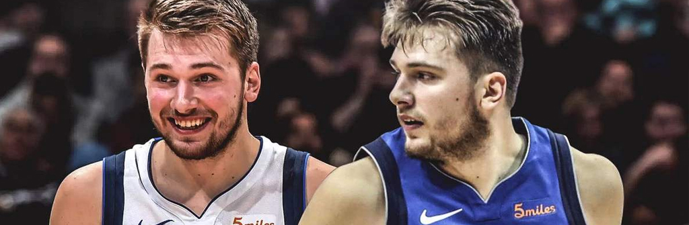
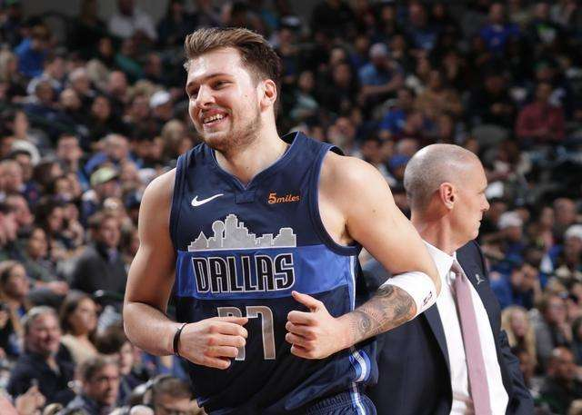

人物评价

卢卡·东契奇是一个技巧全面的进攻创造者，拥有着超越年龄的成熟，是很聪明的进攻球员，对比赛有超乎寻常的感觉，尤其是在持球挡拆时。他能用自己的节奏迷惑防守者，也能利用身材传出那些小后卫无法传出的球。他非常擅长传球，传球视野很好，能够穿针引线组织球队。他不是那种利用花哨运球过掉对位防守者的球员，但他具有控球的天分，能够阅读比赛，并且开始能够在三分线外持球干拔跳投。他能够借助掩护直接跳投得分。高压下运球和一对一单打的能力是他需要提高的部分。有很好的投篮动作，很擅长抓住机会冲击篮筐。他是一个很积极的防守人，在干扰对手投篮时拥有身材优势。不过他缺乏防守低位的身体条件，防守顶尖的得分型后卫时也稍显速度不足。但他非常擅长判断对手的传球路线，也很有篮板嗅觉。他可以成为好的团队防守者，在更好的防守体系中也可以更专注于防好自己的对位人。 [56] （NBA中国官网评）
卢卡·东契奇是一位令人兴奋的球员，他很全能，能够传球、得分，同时能胜任不同的位置，还能够让队友变得更好，他是一位非常不错的球员。 [57] （达拉斯独行侠队主教练里克·卡莱尔评）
卢卡·东契奇有着超出同龄人的头脑，看他打比赛就好像他已经完全将比赛的节奏掌握在了自己手中，他完全有机会成为一名非常优秀的运动员。 [58] （波士顿凯尔特人队主教练布拉德·史蒂文斯评）
卢卡·东契奇作为一个19岁的球员，打得很老到，他在场上无所不能，他可以投进中距离，干拔也没问题，还有一手后撤步，持球进攻特别棒。他还能打挡拆，如今的NBA已是挡拆联盟，这让他融入当下，我觉得他能成大事。他在场上阅读能力非常好，混乱中总能找到头绪。 [59-60] （德克·诺维茨基评）
卢卡·东契奇非常有天赋，聪明，球商高，对自己的技术非常自信。他很清楚自己在做什么，虽然只是个新秀，但大多数夜晚都随心所欲。很高兴见到他在这个联盟的进步，成长为明星球员。 [61] （斯蒂芬·库里评）
卢卡·东契奇非常精明，同时技术精湛，独行侠得到了一个伟大的球员在未来领导球队。
东契奇